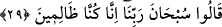
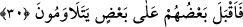

de aynı işâreti taşımaktadır: “Gühanın açığını da gizlisini de bırakın.” (el-En’am,
6/120) Şu hâlde “azim” insanın herhangi bir fiili yapmaya yönelmesindeki gücünü ve bu
hususta olan kararlılığını ifâde etmektedir. Tahkik ehli âlimlere göre; herhangi bir fiili
yapmaya kesin karar veren kimse bundan dolayı sorumlu tutulur. Fakat bunun bir alt
derecesi olan “hemm”, insanın herhangi bir fiili kasdetmesi ve ona yönelmesinin ağır
basması anlamındadır. Bu ise bir sorumluluk gerektirmez.
29. Rabbimizi tesbih ederiz; doğrusu biz (kendi kendimize) yazık etmişiz, dediler.
Onlar, günahlarını itirâf ederek -ki günahın itirâfı tevbe sayılır-; “Rabbimizi tesbih
ederiz.” Biz, Rabbimizi her türlü kötülükten ve eksiklikten tenzih ederiz. Özellikle bize
yapmış olduğu şu cezâlandırmasından dolayı O’nu zâlim olmaktan tenzih ederiz.
“Doğrusu biz” nefsimizin cimriliğine uyarak yoksul insanları mahrum bırakmak
kasdımız sebebiyle “zâlimlermişiz dediler.” Bir başka ifâdeyle onlar, sanki şöyle
söylemiş oldular: Biz, yaptığımız bu kötü davranıştan dolayı Allah’tan bağışlanma
dileriz. Taşıdığımız bu kötü niyetimiz sebebiyle O’na tevbe ederiz. Çünkü biz,
bahçemizin ürünlerinden yoksul insanların paylarını ayırmamayı, onlara vermemeyi
istedik.
Onlar bu sözleri, başlarına azap gelmeden önce söylemiş olsalardı, o azâbın
inmesinden kurtulurlardı. Fakat onlar bu itirâfı, Arapların deyimi ile “ba’de harâbi’l-
Basra” yâni iş işten geçtikten sonra yaptılar.
30. Ardından, kabahati birbirlerine yüklemeye başladılar.
“Yetelâvemûn” fiilinin kökü olan “levm” “kınamak” demektir. “Yetelâvemûn”; onların
yaptıkları bu hareketten dolayı birbirlerini kınamalarını, bir başka ifâdeyle suçu
birbirlerinin üstüne atmalarını ifâde etmektedir. Çünkü onlar, bu konuyu aralarında
görüşürlerken kimisi “bu şekilde davranalım” diye teklif getirmiş, kimisi getirilen bu
teklifin uygun olduğunu söylemiş, kimisi ileri sürülen görüşü hoş gördüğü için sessiz
kalmış, kimisi de bunun uygun bir davranış olmayacağını söylemişti. Kimi diğerine
“böyle böyle düşünüyordun” demiş, diğeri ona “sen de buna râzıydın” gibi sözlerle
suçu birbirlerine atmışlardı.